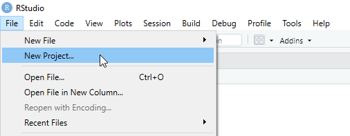
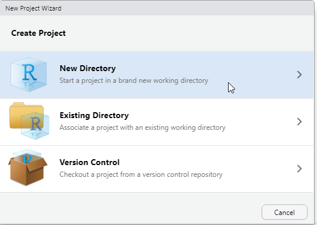
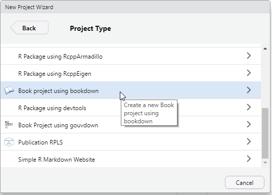
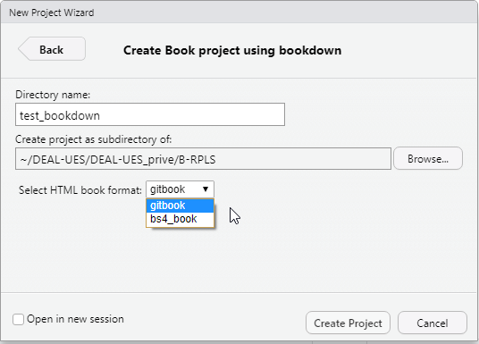
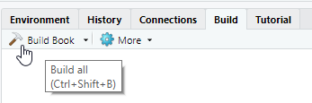
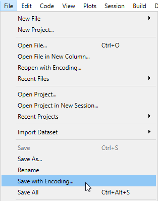

Chapitre 10 De la page au livre, le package bookdown
Le paquet bookdown est construit sur les fondations données par R Markdown http://rmarkdown.rstudio.com. Il s’appuie ainsi sur la simplicité de la syntaxe Markdown aussi bien que sur l’éventail des multiples formats de rendus possibles. Il apporte, quant à lui, un certain nombre de fonctionnalités complémentaires :
- générer un ensemble HTML multipages,
- établir des liens internes de renvoi vers des illustrations, des tableaux, des sections spécifiques du document ou encore des équations,
- faciliter la gestion d’annexes.
Pour ne citer que les fonctionnalités par lesquelles l’extension bookdown enrichit significativement l’écosystème R Markdown.
En dépit du nommage du paquet qui contient explicitement le terme ‘book’ (‘livre’ en anglais), le paquet bookdown ne trouve pas sa seule utilité dans la production de livres. Ou plutôt, le “livre” qu’il produit peut-être vu comme l’agrégation d’un ensemble de documents R Markdown destinés à être lus de manière linéaire, tels qu’une compilation de cours, un rapport d’étude, un manuel d’utilisation, une thèse ou même un journal.
Il faut cependant signaler l’esprit qui a conduit l’auteur Yihui Xie à élaborer ce paquet : faciliter la génération d’un livre sous de multiples formats, tout en restant sobre, c’est-à-dire en essayant de ne couvrir que les fonctionnalités communes à tous ces formats et en préservant la même syntaxe à travers la sélection de formats retenus dans son projet : html, pdf, epub.
10.1 Démarrer un projet de livre de la page blanche
Après cette présentation rapide du paquet bookdown, il est temps d’aborder les aspects pratiques de son utilisation en essayant de répondre à une première question : comment puis-je créer mon premier livre avec bookdown ?
10.1.1 Installer le package bookdown
Remarque
Il faudrait se mettre d’accord sur la manière de renvoyer vers les différentes méthodes d’installation.
ANS: Je suis d’accord. l’installation “de base” pourrait etre faite dans la 1ere partie de la formation. Dans la 2eme partie nous allons installer TinyTex pour générer du PDF. On pourrait compléter cette partie et faire un renvoi. — CCn
Pour un environnement avec un éventail de fonctionnalités aussi complète que possible tel présenté et discuté dans les lignes qui suivent il vous faudra installer aussi un distribution $ $.
Très grossièrement l’environnement $ $ est un des rares produits libres à pouvoir générer du pdf. C’est un environnement qui repose sur des concepts très soucieux du respect de conventions typographiques. Ainsi, des commandes insérées dans le texte permettent d’en dicter avec une précision extrême la répresentation finale, la mise en forme pour impression.
Si vous ne souhaitez pas vous cassez la tête et si vous n’avez pas les
droits d’administration sur votre poste, procédez à l’installation de
la distribution TinyTex tout spécialement préparée pour cela par
l’auteur même du package bookdown Xie Yihui, d’autant qu’il l’a
rendue c’est extrêmement simple cette opération pour quiconque
pratique un peu de R} puisque tout se
passe justement dans sa console :
10.1.2 Initialiser un modèle de livre
Il s’agit non pas de chercher l’entrée de menu correspondante dans
l’entrée Fichier>Nouveau fichier mais bien sous le chemin
Fichier>Nouveau projet.... En effet, à la différence des
manipulations qui ont été abordées précédemment dans ce guide, le
système bookdown est tout entier tourné vers la conversion d’un
ensemble de fichiers pour les assembler en une série logique
monolithique.
Il est donc intéressant de s’en rendre compte en utilisant les modèles
de démonstration mis à notre disposition par RStudio. En effet,
lorsque nous recourrons au menu de création d’un nouveau bookdown
ce n’est pas une structure vierge qui va être initialisée mais bien un
document modèle complètement fonctionnel. Il va être établi dans le
répertoire que nous aurons préalablement désigné.
10.1.3 Générer le livre et le (re)lire
Pour créer un nouveau livre, il faut aller dans Fichier>Nouveau projet....

Une pop-up apparait nous demandant à partir de quoi créer ce nouveau projet.
Comme nous souhaitons créer un livre à partir de rien alors on choisit
Nouveau Dossier.

Apparait alors une selection de type de projet possible. Cette liste dépend
des packages installés dans votre RStudio. Il faut selectionner
Book project using bookdown.

Enfin, il faut spécifier une localisation dans notre espace de fichier et éventuellement de préciser un format (soit gitbook, soit bs4_book.

Nous avons alors à disposition un exemple de source
complètement fonctionnel. Mais ce ne sont que des sources, comme nos
fichiers Rmarkdown précédents, pour véritablement se rendre compte
du résultat final, il faut procéder à l’étape de rendu.
Ce qui nous amène à explorer plus avant les principes d’organisation de RStudio en tant qu’interface. Si l’organisation initiale n’a pas été trop bouleversée, le cadran haut-droit regroupe un certain nombre d’onglets qui ont tous plus ou moins trait à l’environnement du projet et à son pilotage. Il y réside notamment un onglet Build (Construire) qui dans son menu propose un bouton avec une icône représentant un marteau qui va nous permettre de lancer le rendu (la construction) de l’ensemble de fichiers Rmarkdown.

Par défaut le rendu sera sous une forme de “site web” très en usage en ce qui concerne les manuels logiciels sur Internet.
La construction de manière effective s’éxécute en appuyant sur le bouton et, après le défilé d’un certain volume d’informations rendant compte des différent traitements effectués, si tout se passe bien, une fenêtre (navigateur web interne de RStudio) s’ouvre au premier plan. Elle présente le rendu final et un bouton qui permet d’ouvrir et d’explorer le rendu dans le navigateur web configuré pour le système hôte.
Le document résultant de la phase de construction est pour le coup une
véritable vitrine qui présente et montre à l’oeuvre les principales
fonctionnalité de bookdown.
3 pour le prix d’1 ! Si vous avez la curiosité d’explorer le
sous-répertoire _book du dossier projet, vous y trouverez aussi le
rendu sous forme d’un “livre” en pdf (format reconnu princpalement pour
sa portabilité en matière d’impression) et encore en epub (format
adapté pour la lecture notament sur liseuse mais plus généralement
pour tout écran portafif).
10.1.4 Se lancer dans l’écriture
À ce stade rien de plus simple, ni rien de bien différent de ce qui
a été vu précédemment: il s’agit d’éditer des fichiers R Markdown,
(extensions .Rmd).
Relancer la construction (compilation?) pour se rendre compte de l’évolution du contenu.
Des chapitres en trop, ou des chapitres à rajouter ? Il suffit de
supprimer ou de créer les fichiers Rmarkdown correspondant.
Ils seront ordonnés automatiquement selon leur ordre
alphabétique, c’est pour cela que bien souvent vous trouverez des
fichiers numérotés 01-..., 02-... ce qui est une manière très
explicite de maîtriser l’ordre de composition du document général.
10.2 Composer son livre quand la matière est déjà disponible
Un rapport bookdown contient de manière caractéristique plusieurs
chapitres et chacun de ces chapitres est un fichier R Markdown,
portant l’extension .Rmd. Ces fichiers R Markdown doivent débuter
immédiatement après l’en-tête par le titre du chapitre en utilisant le marquage
propre à un titre de premier niveau, par exemple : # Titre du chapitre. Pour le bon fonctionnement général, tous les fichiers R
Markdown doivent être encodés en UTF-8, notamment pour les langages
présentant des caractères accentués (comme le français).
Trucs & Astuces
Sans être très féru de tout ce qui concerne l’encodage, vous trouverez un certain nombre de facilités dans RStudio:
- pour ouvrir un fichier avec l’encodage qui vous convient
Fichier \(\Rightarrow\) Réouvrir avec encodage…

- pour enregistrer un fichier au bon encodage
Fichier \(\Rightarrow\) Sauvegarder avec l’encodage…

Concernant la première fonctionnalité “Réouvrir avec encodage…”, dans la fenêtre de dialogue n’hésitez surtout pas à sélectionner UTF-8 et cocher l’option : “Définir comme encodage par défaut pour les fichiers sources”, vous n’aurez ainsi quasiment plus de question à vous poser par la suite.
10.2.1 Illustration pratique d’une composition
10.2.1.1 Faire d’un ensemble une unité
Allons maintenant au-delà de l’interface RStudio et du système relativement mécanique de ce que nous appelons le clique-bouton. Non que le clique-bouton n’ait pas sa raison d’être, mais parce que les contingeances auxquelles il est soumis nous brident, pour l’instant encore, dans notre capacité d’exploration et d’analyse.
Pour se faire déconnetez votre souris de l’ordinateur, ou désactivez-en le clavier tactile … … vous n’êtes évidemment pas obligés d’en arriver jusqu’à cette extrémité, mais vous avez compris l’idée. Il s’agit maintenant de communiquer en language R.
Rappellons-nous que pour rendre (transformer) un fichier source R
Markdown en un format de consultation plus généraliste (odt, pdf,
docx, html …), le package rmarkdown nous fournit la fonction
rmarkdown::render(). bookdown en offre une du même niveau :
bookdown::render_book().
La première prend logiquement comme paramètre d’entrée obligatoire un
fichier R Markdown (ou markdown tout simple, voire même simplement du
R), quand la seconde n’exige même pas d’information car par défaut elle
prendra le répertoire en cours pour tenter d’exploiter tous les
fichiers .Rmd disponibles afin d’en constituer un livre. Le
paramètre input permet toutefois un peu de souplesse en indiquant
plus spécifiquement quel répertoire rendre sans être forcément
obligé par avance de le définir comme répertoire de travail courant
(current working directory : getwd/setwd).
Travail dirigé :
Objectif
Utiliser les 3 .Rmd vu précédemment pour expérimenter la composition d’un book.
Prérequis
Etapes
10.2.1.2 Vous aviez promis des rendus stylés !
Nous espérons que l’expérimentation précédente vous aura
permis de vous rendre compte concrètement de ce qui fait une
distinction visible entre les packages rmarkdown et bookdown.
À ce stade, nous nous rendons manifestement compte que bookdown
satisfait un de ses premiers engagements c’est-à-dire : permettre de
constituer une unité offrant une lecture séquentielle (à
partir de plusieurs fichiers dans les coulisses).
Mais somme toute bookdown ne serait-il qu’un énième générateur de
site web statique ?
Car enfin ce premier résultat ne détonne finalement
pas de ce que nous avons l’habitude de rencontrer maintenant sur le
net pour nous aider à comprendre le fonctionnement de tel ou tel
programme. D’ailleurs hors les couleurs retenues, fonctionnellement
cela ressemble assez aux usuels bouquets de présentation accompagnant
les packages alliés au tidyverse
dplyr,
readr,
toutefois nous pourrons – en y regardant bien – voir au bas de la
page, généralement à droite, que ceux-ci ont été réalisés avec
pkgdown. La formule a tellement séduit que d’autres groupes
l’utilisent aussi comme rOpenSci avec son ensemble des paquets dont
entre autres
dataspice.
Mais, dans l’histoire des recettes pour mettre en lumière de la
documentation le site https://readthedocs.org/ a lui aussi ses
adeptes et nous y trouverons des vestiges d’initiatives fort
intéressantes comme
r-snippets même si
elle ne semble plus maintenue.
Pourquoi parler de https://readthedocs.org/ ?
Parce que justement la lecture linéaire est ce qui construit la force
du système de présentation d’un nouvel outil en structurant
l’information dans une construction progressive. C’est le propre du
mode d’emploi et le système
sphinx
(en python)
duquel il readthedoc a tiré son inspiration semble avoir devancé un
peu l’avènement d’une compagnie qui a eu un certain succès pour la
mise en forme de documentations utilisateur https://www.gitbook.com/.
D’où le fameux nom gitbook rendant honeur à l’esthétique
particulière que fit émerger l’entreprise. D’ailleurs dans
l’extraordinaire base d’archive que constitue github avec laquelle
gitbook faisait la passerelle (mais qui ne sont pas structurellement
liées en tant qu’entreprises à notre connaissance) nous retrouvons une
initiative
pour exploiter directement les service gitbook depuis les sources d’un
package tout autant qu’il existe un
package
pour produire de la documentation sur le modèle readthedoc.
Après cette petite digression, pour faire un tout petit zoom sur l’une
des nombreuses rivières qui alimentent la quête perpétuelle visant à
trouver le système de documentation parfait (S’il n’y en avait pas
?!), retrounons à la distinction que nous faisions entre pkgdown et
bookdown. En effet, nous appelions l’ensemble de pages web formées
par pkgdown un bouquet car les pages regroupées font sens ensemble
et la barre des menus vient même structurer cet ensemble par une
certaine codification, convention. Mais dans bookdown, il y a
vraiment un ordre, une progression, une linéarité.
Et mécaniquement cette linéarité peut s’apposer successivement sur un
ensemble de pages et forme naturellement un livre et c’est aussi cet
engagement que porte bookdown.
Dans la pratique, comment devons-nous poursuivre nos manipulations pour obtenir un fichier pdf ?
Réponse : simplement en passant une option spécifiant que c’est le format attendu.
à l’issue du traitement vous aurez un retour d’information vous signalant que votre pdf est servi !
Output created: _book/_main.pdfLa valeur de retour de la fonction elle-même est d’ailleurs le chemin complet vers le fichier créé.
Et si nous voulions générer plusieurs mode de document simultanément ?
Laissez libre court à vos envies et explorez parmi les multiples modèles de sortie proposés soyez conscient de leur limite et des contraintes qu’ils imposeront mais aussi posez-vous la question de ce que vous voulez vraiment faire :
- les formats dits : Book output format qui justifient notre
intérêt jusqu’ici parce qu’ils travaillent sur un ensemble de
fichiers :
- gitbook
- pdf_book
- epub_book
- bs4_book
- bs4_book_theme
- html_chapters
- html_book
- tufte_html_book
- les formats dit : “Single document output formats” qui ne
travaillent que sur un seul fichier .Rmd mais qui rétro-portent à
rmarkdowncertaines fonctionnalités comme les renvois internes :- html_document2
- html_fragment2
- html_notebook2
- html_vignette2
- ioslides_presentation2
- slidy_presentation2
- tufte_html2
- pdf_document2
- beamer_presentation2
- tufte_handout2
- tufte_book2
- markdown_document2
- context_document2
- github_document2
- odt_document2
- powerpoint_presentation2
- rtf_document2
- word_document2
10.2.1.3 Maîtrise des méta-données
Si jusqu’ici vous vous êtes prétés au jeux des manipulations que nous vous proposons, il n’aura pas échappé à votre oeil aguerri que la gestion des métadonnées (titre, auteur, date) n’est pas si intuitive que cela.
Confirmons-le par une petite manipulation.
TD
Dans les faits le dernier header yaml écrase les précédents.
Aussi, l’usage veux que le premier chapitre débute dans le fichier index.Rmd, convention qui nous vient du monde du web, des serveurs et de l’html, et que seul ce fichier comporte un header yaml.
10.2.2 Organisation des sources d’un bookdown
Après avoir mis les mains dans le cambouis et constitué notre book, notre livre ou notre rapport à la main, appelez-le comme il vous convient, revenons à l’exemple standard pour démystifier les nombreux fichiers nécessaires de prime abord et en comprendre l’utilité.
bookdown::create_bs4_book('../mybs4book')
setwd('../mybs4book')
list.files()
bookdown::render_book(output_format = 'bookdown::bs4_book')_bookdown_files _book - mybs4book.Rproj
- README.md
- index.Rmd
- 01-intro.Rmd
- 02-cross-refs.Rmd
- 03-parts.Rmd
- 04-citations.Rmd
- 05-blocks.Rmd
- 06-share.Rmd
- 07-references.Rmd
- _bookdown.yml
- _common.R
- _output.yml
- preamble.tex
- style.css
- book.bib
- packages.bib
- chicago-fullnote-bibliography.csl
- mybs4book.rds

10.3 Au-delà du fond s’attaquer aux goûts et couleurs
Si vous nous avez lu jusqu’ici dans notre découverte pratico-pratique
du package bookdown, de sa place dans l’écosystème des publications
reproductibles qui reviennent sur le devant de la scène et prennent un
nouveau jour, alors : félicitations !
De notre côté, il nous semble que les éléments fournis jusqu’ici dans
un accompagnement par la manipulation doivent vous permettre desormais
de produire vos livres sans problème.
Il nous resterait encore à aborder deux autres fonctionnallités de bookdown
pour être totalement complet, ce sont :
- les liens de renvoi internes,
- l’utilisation de référence bibliographique,
ces facettes seront couvertes dans une édition ultérieure de ce
document (pour l’instant des liens seront données en fin de chapitre à
l’attention de ceux pour qui ces fonctionnalités sont indispensables).
Mais, excepté ces deux fonctionnalités spécifiques d’ailleurs peu
fréquentes d’utilisation dans nos métiers, considérons pour l’heure
que vous êtes désormais un utilisateur éclairé de bookdown. La
partie à laquelle nous nous attaquons ici a pour but de vous faire
atteindre le niveau maîtrise.
Partons du postulat que sitôt vous aurez modelé votre matière de fond
en un livre, sitôt vous vous direz que cette production ressemble à
toutes les autres, or, vous voudrez plutôt quelle vous ressemble !
Nous allons tenter de voir en suivant quelles sont vos options pour
cela et à l’occasion ce balayage nous emmenera à investiguer un peu
plus profodémment quelques aspects techniques du package bookdown.
10.3.1 Les types de sorties, ou les différents rendus possibles
Dans la section @ref(#styled-outputs) nous avons vu qu’à partir d’un
même projet source bookdown nous pouvions choisir entre différents
types de sorties, nous devons maintenant être plus précis que
cela. Dans la pratique, il y a plusieurs étages à la fusée, en effet
tout part du format terminal d’enregistrement sur le disque dur
autrement dit : en quel type de fichier va être converti
notre projet bookdown in fine.
Concentrons nous sur les transformations mères (Book output format),
celles-là mêmes qui au départ ont motivées la création de bookdown
au-delà de l’apparente multiplicité des types de sorties possibles,
pas moins de 8 (gitbook, pdf_book, epub_book, bs4_book,
bs4_book_theme, html_chapters, html_book, tufte_html_book), il n’est
en fait question que de trois types de fichiers : pdf, epub et html.
Notons tout de suite l’exception du format de fichier html, c’est le
seul format où la transformation bookdown et plus généralement
rmarkdown se traduit *matériellement” par plusieurs fichiers, c’est
sa nature même. En clair, la résultante d’une transformation source
bookdown en l’un des types de sorties (git_book,, bs4_book,
bs4_book_theme, html_chapters, html_book, tufte_html_book) va résulter
en la création d’un répertoire nommé par défaut _book dans le
répertoire projet. Ce répertoire _book va contenir quantité de
fichiers constituant un mini-site statique (ensemble de pages web
cohérent) qui s’appuie sur une grande variété de type de fichiers :
html bien évidemment, css, javascript, des resources liées
(images, icônes, fichiers de police de charactère et autres), bref
tout un écosystème.
La magie du web repose sur quelques conventions, par exemple une fois
ce répertoire _book mis sur un serveur internet (appelons le
https://mon-site.com), s’il contient un fichier nommé index.html
alors l’appel du répertoire
2
http:://mon-site.com/_book/ par un
navigateur quelconque (Chrome, Firefox, Edge …) ouvrira
naturellement cette page index.html évitant à devoir invoquer
explicitement la page d’entrée par son nommage exact. C’est pourquoi
la convention de débuter par un fichier index.Rmd fait sens.
Nous le voyons rien que cette précision sur les types de sorties
reposant sur le format html peut appeler à de longues digressions si
l’on vise l’exhaustivité didactique. C’est hors de portée pour nous
dans le cadre de ce modeste support de formation. La difficulté
d’expliquer s’étend aussi au format pdf et epub qui ne sont pas
plus simples, alors notre pirouette sera de vous renvoyer vers les
documents fondateurs de ces formats, ce qu’on appelle les
spécifications, mais même en faisant cela vous ne serez pas encore
arrivés pour certaines raisons que nous commentons :
spécifications epub le lien donné ici renvoi vers le format en version 3.2, oui notons au passage que les formats évoluent et s’améliorent avec le temps, le standard epub est pris en premier exemple, car le curieux ou le téméraire pourrait se dire : il suffit que je connaisse ça. L’organisme de publication W3C est complètement transparent, tout est publié est accessible gratuitement.
spécification html, les choses se compliquent l’histoire et en marche, le W3C publié originellement des spécifications versionnées, mais le
htmlest tellement stratégique et central aujourd’hui que non seulement une nouvelle institution est née, mais en plus les spécifications s’affirment elles-mêmes comme vivantes.spécifications pdf l’histoire du format pdf possède aussi des détours, et là les choses se corsent encore plus pour accèder à la connaissance totale puisque l’organisme qui à normaliser ces spécifications est l’ISO et qu’il faut s’acquitter monaitairement de certains droits pour pouvoir accèder au document valant norme.
L’équipe d’auteurs de ce document a-t’elle lu ces spécifications ? Pas du tout ! Heureusement d’ailleurs, car cela aurait peut-être été une perte de temps collosale par rapport à nos besoins directs, et même parfois inutile.
Dans le cadre du pdf cela aurait été du pur temps perdu et inutile
puisque en fait bookdown lui-même ne produit pas directement du
pdf mais un format intermédiaire dans un langage appelé
\(\LaTeX\).
10.3.2 Un choix esthétique cadré
Parfois vous pouvez vouloir changer le thème global de sortie, et de
manière générale ce peut-être réalisé grâce à l’option in_hearder,
ou l’option css plus particulièrement adaptée pour les sorties
HTML. Certains formats de sortie ont leur propre thème, tel que
gitbook, tuft_html_book, et tufte_book2, d’ailleurs cela vous ne
devriez pas souhaitez les modifier de trop, d’abord parce qu’ils
tendent vers des objectifs très précis ensuite par que techniquement
le effort pour les modifier seront importants puisqu’ils reposent sur
des mécaniques complexes. Par comparaison les formats de sortie
html_book() et pdf_book() ne sont pas attachés à des thèmes
spécifiques en conséquence ils peuvent être facilement modifiables et
adaptables.
Ainsi, le thème de défaut, ou style, pour html_book() est le style
nommé Bootstrap. Le style Bootstrap possède lui-même en réalité
plusieurs choix de thème auxquels vous pouvez reccourir, votre choix
s’étend parmis les valeurs : default, bootstrap, cerulean,
cosmo, darkly, flatly, journal, lumen, paper, readable, sandstone,
simplex, spacelab, united, and yeti. Vous pouvez indiquez lequel de
ces thèmes vous voulez appliquer en paramétrant l’option theme comme
suit :
---
output:
bookdown::html_book:
theme: united
---Si éventuellement il advenait que vous n’apréciiez aucun des thèmes
proposé par Bootstrap, il vous reste le recours de fixer l’option
theme à null et d’appliquer votre propre feuille de style css,
grâce aux options (css ou in_header).
Pour le format de sortie pdf_book(), en plus de l’option in_header
déjà évoquée, une autre solution est de changer la classe
(documentclass) de document. Il existe de très nombreuses classes
possibles pour les mise en forme de type livres, telles que memoir
(https://www.ctan.org/pkg/memoir), amsbook
(https://www.ctan.org/pkg/amsbook), KOMA-Script
(https://www.ctan.org/pkg/koma-script) et bien d’autre. Voici un bref
example de l’entête de données YAML pouvant permettre de déclarer le
thème de sortie scrbook proposé au travers de l’extension \(LaTeX\)
KOMA-Script :
---
documentclass: scrbook
output:
bookdown::pdf_book:
template: null
---A titre d’information, quelques maisons d’édition spécialisées (telles
que Springer et Chapman & Hall/CRC) disposent de leur propre style
\(LaTeX\), de leur propre fichiers de classe (.sty). Dans ce cas là
vous pourriez essayer de changer l’option documentclass
afin de spécifier en lieu et place celle de leur style, mais vous
constaterez que bien souvent ce n’est pas aussi simple que cela. Votre
recours le plus efficace sera soit d’utiliser l’option in_header
soit plus surement encore d’aller modifier le modèle de document de
sortie \(LaTex\) utilisé par Pandoc pour l’adapter à ces feuilles de
style particulière.
Notez bien par ailleurs que lorsque vous changez le paramètre
documentclass, vous êtes suscceptibles de spécifier un paramètre Pandoc
aditionnel --top-level-division=chapter afin que Pandoc sache
bien quel premier niveau de titres il doit traiter comme chapitre en
lieu et place des sections (c’est en effet le fonctionnement par
défaut quand la documentclass est book, autrement dit pour une
structuration du rendu en mode ‘livre’), les options s’exprimeraient
par exemple ainsi :
documentclass: krantz
output:
bookdown::pdf_book:
pandoc_args: --top-level-division=chapter10.3.3 Polices de caractères et couleurs, imposez votre style
Revenons sur l’option output/includes/in_header.
Cette option prend en paramètre un nom de fichier et va permettre
d’insérer simplement aux environs des premières lignes du fichier
html qui sera généré en sortie (exactement dans son entête<head>)
le contenu dudit fichier pour influer sur la mise en forme des
différents composants et de leur rendu final. Cette adaptation
présuppose évidement une certaine maîtrise du html et du sous
langage de domaine spécifique qui lui est associé pour stylisation :
le css. Le html (et le css) sortent du cadre de notre guide et
nous devons vous renvoyer vers des ressources extérieures, cela étant,
il s’agit de standards ouverts et vous ne devriez avoir aucun mal à
trouver sur l’Inter de quoi rasasier envie d’apprendre, le tutoriel du
W3C “Débuter avec HTML + CSS” nous
semble un bon point d’attaque.
dans la pratique le chemin sur un serveur s’appelle une
URL↩︎